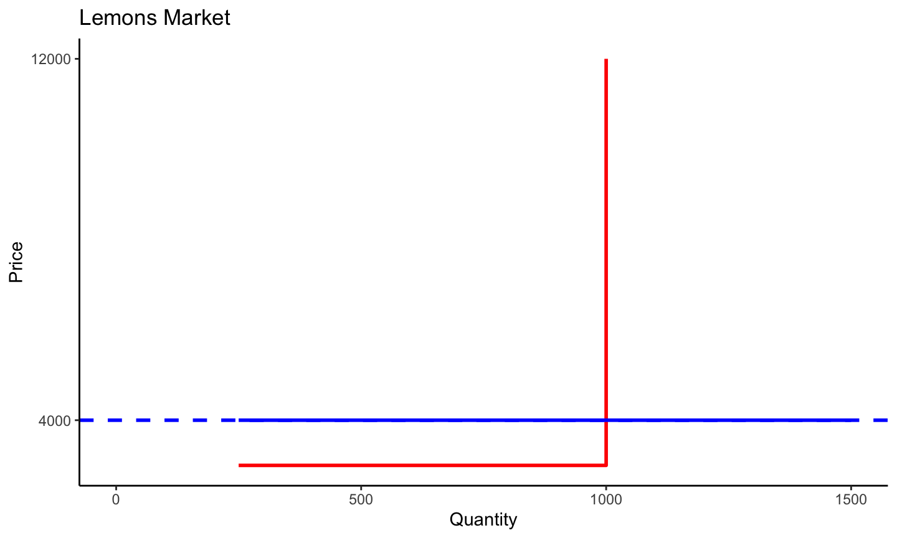
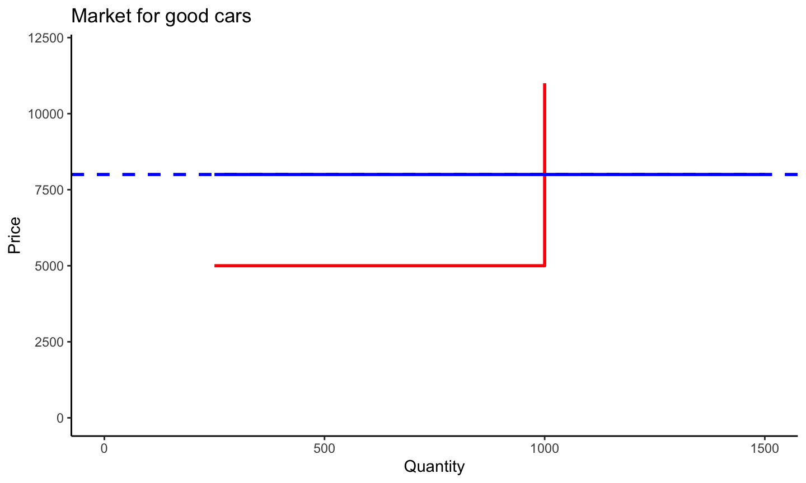
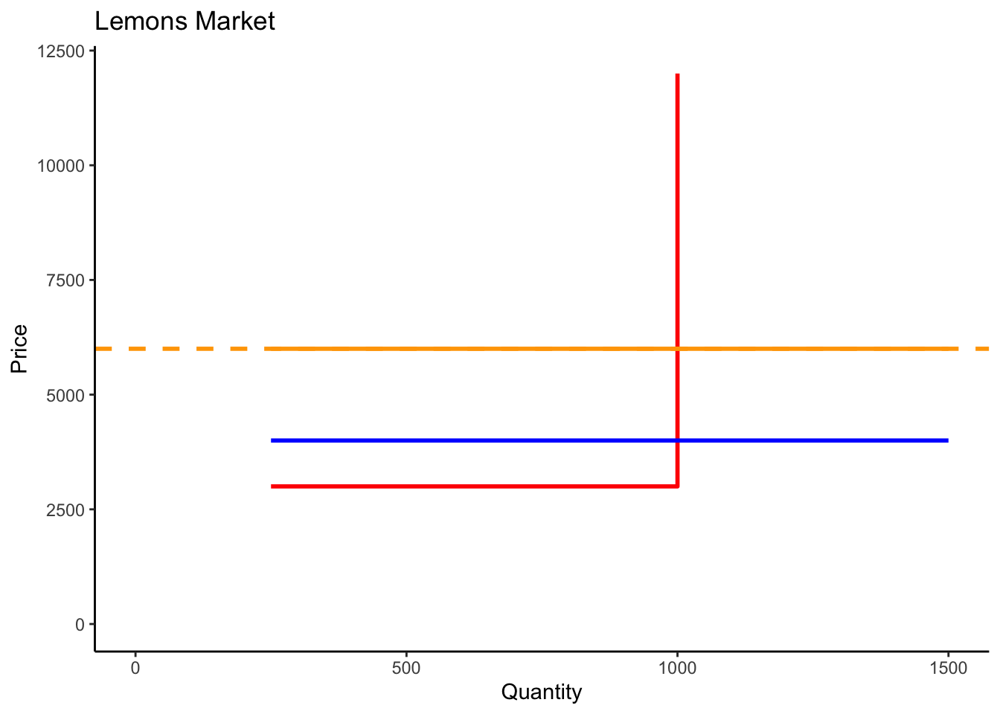
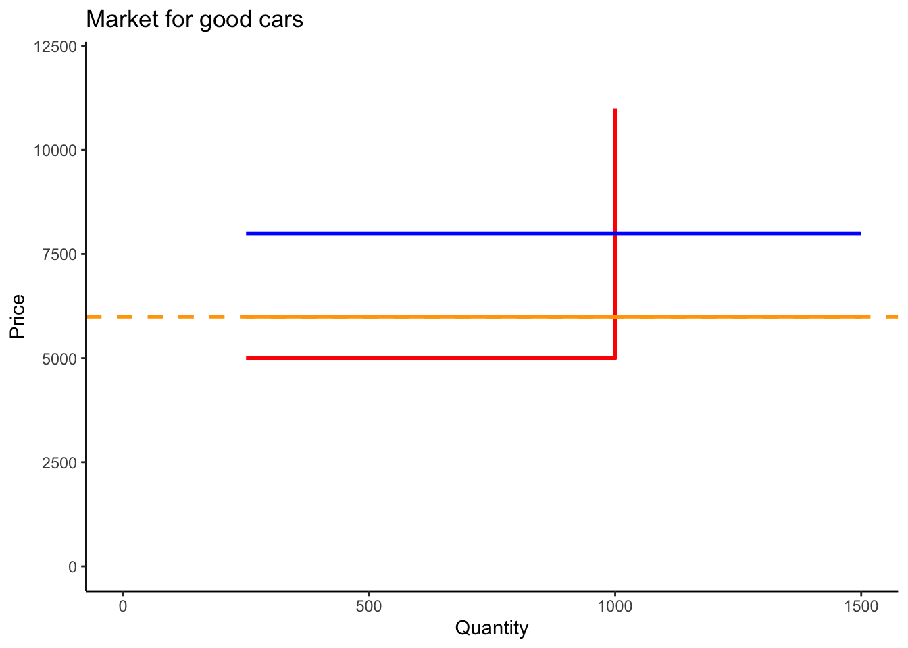

ECON 253
Henrique Veras
Asymmetric Information and Adverse Selection
A Question
At some urban universities, many students and faculty eat at lunch trucks that are parked along the streets surrounding the campus. Before going there for lunch one day, you ask two people where you should eat. Neither individual you ask has ever been there. One says, “Just pick the one with the shortest line.” The other says, “Pick the one with the longest line.” Which advice should you follow?
Introduction
- Today we’ll discuss the issue of Asymmetric Information in Economics
- So far, all the models and market structures that we discussed consider that information (eve when missing!) is equally shared among all agents.
- Prices in Perfect Competition
- Payoffs in Prisoner’s dilemma, etc.
Example
- Why do people accept working in dangerous jobs?
- Higher wages to compensate risk?
- Evidence of wage differentials across industries
- However we do not see differences across firms in the same industry.
- Prospective employees often do not know the injury rates at individual firms but may know the average injury rate over an entire industry.
Problems Due to Asymmetric Information
- Hidden characteristic is an attribute of a person or thing that is known to one party but not to others
- Adverse selection
- Hidden action is an act by one party to a transaction that is known to one party but not to others
- Moral Hazard
Adverse selection
- Opportunism characterized by an informed person’s benefitting from trading with a less-informed person who doesn’t know about an unobserved characteristic of the informed person.
- Examples?
- People who buy life insurance policies are better informed about their own health than insurance companies are.
- What else?
Moral Hazard
- Opportunism characterized by an informed person’s taking advantage of a less-informed person through an unobserved action.
- Examples?
- Insured people may engage in risky behaviors that increase the probability of claims against the insurance company.
- What else?
An Example of Adverse Selection | “If he wants to sell that horse, do I really want to buy it?”
- Let’s focus on the issue of adverse selection now.
- Consider the market for used cars.

The Market for Lemons
- There are two types of cars in the market: low-quality (L) and high-quality (H).
- Assume a large number of potential buyers
- Willingness to pay:
- $4,000 (L)
- $8,000 (H)
- Willingness to pay:
- Assume 2000 sellers:
- 1000 owners of L cars
- Reservation price: $3,000
- 1000 owners of H cars
- Reservation price: $5,000
- 1000 owners of L cars
Market Equilibrium with Symmetric Information
- Situation 1: Buyers and sellers have full information

- Equilibrium: 2,000 cars are sold (1,000 H and 1,000 L)
- \(P_L = 4,000\) and \(P_H = 8,000\)
Market Equilibrium with Symmetric Information
- Situation 2: Buyers and sellers have limited information
- If buyers and sellers do not know the quality of the cars, all cars will be sold for the same price.
- Assume risk neutrality.
A Detour Into the Risk Neutrality Assumption
- Suppose you are given two options:
- $100 with certainty
- A lottery with 50% of chance of receiving $200 and 50% of chance of receiving $0.
- Expected value is \((\$200 \times 0.5) + (\$0 \times 0.5) = \$100\)
- Which one do you prefer?
- Risk averse: Choose the $100
- Risk lover (taker): Choose the lottery
- Risk neutral: Indifferent
Back to the Equilibrium
- Situation 2: Buyers and sellers have limited information
- If buyers and sellers do not know the quality of the cars, all cars will be sold for the same price.
- Assume risk neutrality.
- Then, buyers will be willing to pay at most:
- \((\$4,000 \times 0.5) + (\$8,000 \times 0.5) = \$6,000\)
- Sellers will be willing to accept at least
- \((\$3,000 \times 0.5) + (\$5,000 \times 0.5) = \$4,000\)
- Since sellers also do not know the value of their cars, they accept the deal.
- Equilibrium: 2,000 cars are sold (1,000 H and 1,000 L)
- \(P_L = P_H = P = \$6,000\)
Graphical Solution

Market Equilibrium with Asymmetric Information
- Now let’s assume that sellers know the quality of their cars but buyers do not.
- In this example, Expected willingness to pay is higher than willingness to accept in both markets.
- Equilibrium is the same as before:
- 2,000 cars are sold (1,000 H and 1,000 L)
- \(P_L = P_H = P = \$6,000\)
Market Equilibrium with Asymmetric Information
- Now consider a more interesting case:
- Same numbers as before but the reservation price of the high quality car owners is $7,000.
- What changes?
- Only L car owners will be willing to sell!
- Buyers will notice that H car owners will be driven out of the market
- Equilibrium:
- 1,000 cars are sold (0 H and 1,000 L)
- \(P_L = \$4,000\)
- This equilibrium is inefficient because potential buyers value H cars more than current owners!
George Akerlof
This simple example is based on a paper published by George Akerlof in the Quarterly Journal of Economics (QJE), in 1970.
Before being accepted at QJE, Akerlof faced some rejections along the way:
- AER and RESTUD "did not publish papers on topics of such triviality.
- JPE: if this paper was correct, economics would be different.

Example
- The figure below shows the market for (used and new) cars in a given town. Suppose that there are 1,000 car owners (10% used and 90% new).

- What are price and equilibrium quantities with symmetric (full) information?
- What are price and equilibrium quantities with symmetric (incomplete) information?
- What are price and equilibrium quantities with asymmetric information?
Example 2
- Now assume that there are 1,000 car owners (90% used and 10% new).
- What are price and equilibrium quantities with symmetric (full) information?
- What are price and equilibrium quantities with symmetric (incomplete) information?
- What are price and equilibrium quantities with asymmetric information?
Reducing Adverse Selection
- An uninformed person may engage in screening to determine information held by informed people (e.g. test-driving a car)
- Signaling: An informed party may engage in signaling to send information to a less-informed person (e.g. firm distributing favorable report on its product by an independent testing agency, warranty, etc.)
- Some organizations publish expert third-party information about brands (e.g. Consumer Reports)
Laws and Policies to Prevent Opportunism
- Disclosure laws
- Governments can require informed parties to disclose relevant information
- Product liability laws
- laws prevent consumers from being stuck with nonfunctional or dangerous products
- Universal coverage:
- Eliminate adverse selection in health insurance markets by government provision of health care to everyone
Labor Market Applications
- What kinds of asymmetric information problems plague labor markets?
- Prospective employees may have less information than firms do about working conditions.
- Firms may have less information about potential employees’ abilities than potential workers do.
- We’ll see how signaling and screening can affect (positively or negatively) the welfare in labor markets.
Cheap Talk
Cheap talk is a relatively cheap way to signal one’s ability (writing some skill level on a C.V, for instance).
Cyndi knows her ability (high or low) and the firm wants to match her ability to the level of ability demanded on the job.

Cheap Talk

- In the second case, the firm knows Cindy’s incentives and does not believe her cheap talk.
- Instead, they calculate an expected payoff of \(0.5\times 1 + 0.5\times 4 = 2.5\) for the undemanding job and \(0.5\times 2+ 0.5\times 1 = 1.5\) for the demanding job.
- The outcome is inefficient if Cindy is high ability!
Spence’s Signaling Model
- When cheap talk does not work, workers need to send a more expensive signal to be believed: a degree!
- Assumptions of the signaling model:
- Schooling provides no useful training and only serves as a signal (don’t worry, this is an unrealistic assumption - I hope!!).
- H workers are \(\theta\) share of the workforce; L workers are \(1-\theta\) share.
- H workers are worth \(w_h\) to the firm; L workers are worth \(w_l\) and will pay workers these marginal products.
Spence’s Signaling Model
- Two types of equilibria arise:
- Pooling equilibrium: dissimilar people are paid alike or behave alike.
- Separating equilibrium: dissimilar people are paid differently and behave differently
Separating Equilibrium
- If \(w_h - c > w_l\), it is advantageous to H workers to pay the cost of education and signal their ability.
- Then, in equilibrium:
- H workers payoff is \(w_h - c\)
- L workers payoff is \(w_l\).
- Firms break even because they pay the worker’s productivity
Pooling Equilibrium
- What are the conditions for the existence of a pooling equilibrium?
- Firms pay workers the expected marginal product:
- \(\bar{w}=\theta w_h+(1-\theta)w_l\)
- Then, the pooling equilibrium occurs if
- \(w_h-c<\bar{w}\)
- Equilibrium outcome
- Both H and L workers receive \(\bar{w}\)
- Firms break even (gains of paying lower wages to H are compensated by higher wages to L)
Examples
- Suppose \(w_h=\$40,000\), \(w_l=\$20,000\), \(c=\$15,000\).
- Which type of equilibrium is possible?
Screening in Hiring
- Firms screen prospective workers in various ways:
- Based on observable characteristics believed to be correlated with ability
- Examples?
- Based on performance on a test, which may or may not accurately measure skills required on the job.
- Based on observable characteristics believed to be correlated with ability
Statistical Discrimination
- Some employers engage in statistical discrimination.
- Hiring based on the belief that people of a certain age, gender, race, religion, or ethnicity have a higher ability than others on average.
- Statistical discrimination is “efficient”, from a purely economic standpoint, but it is often unlawful.
- In the U.S., it is illegal in to make hiring, pay, or promotion decisions using a performance prediction that is based on race, sex, age or disability.
- Statistical discrimination is difficult to detect, however, and so it is plausible that it occurs frequently despite the law.
Empirical Evidence for Discrimination in the Labor Market
- In order to answer the question of whether there is racial labor market discrimination, Bertrand and Mullainathan elaborate an interesting experiment:
- Sending resumes by mail or fax to advertised job positions while manipulating perceptions of race by using distinctively ethnic names (otherwise holding constant resume characteristics)
- The authors find that callback rates are lower for black sounding names.